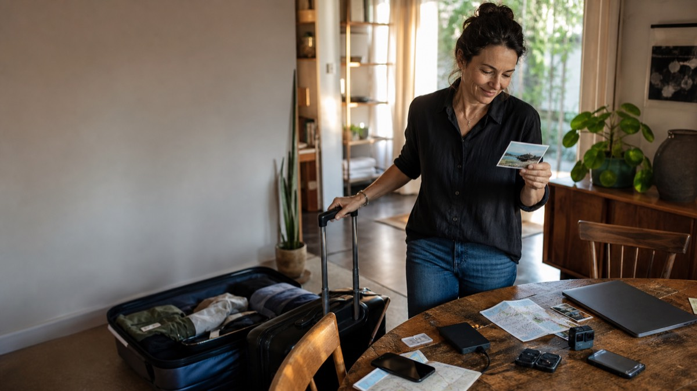

Momentro Guides · Family films
How to organize family videos without feeling overwhelmed
You do not have to sort your whole family archive. Start with one small collection that you would genuinely like to watch again.

Start with one film, not the whole history
Family video collections grow in the background. One phone becomes two. A camera card is put in a drawer. Someone sends a clip in a group chat. Years later, there are folders, drives and a small feeling that the job has become too big to begin.
The way through is not to become the family archivist overnight. Pick one small story: a weekend away, one school year, a birthday, or the holiday when everyone was together. You are making a watchable film first, not solving storage forever.
A useful first project is small enough to finish and meaningful enough that somebody will press play.
Make one temporary gathering place
On your computer, create one folder with a plain name: Summer by the sea — to choose, or Grandad’s 70th — film. This is not your permanent archive. It is a calm workspace for one project.
Copy in the clips you want to consider from phones, camera cards and existing folders. Do not move originals or assume this folder is a backup. It only gives you one place to look while you choose.
Ask people for a few favourites, not everything
If relatives have footage, asking them to send every file can create a second mountain. Try a smaller request: “Could you send the three clips you would be sad to lose from that weekend?” People usually know immediately which ones they mean.
That gives the film different points of view without turning one person into the organiser of everybody’s phone.
Use simple names only when they help
You do not need to rename every file. If two clips are impossible to recognise, a short label can help: ferry laugh, first swim, cake candles. Most of the time, the date already recorded by the device is enough.
The aim is to find moments again, not to make a perfect spreadsheet of your family.
Keep backup and editing as two separate jobs
Backing up originals matters, especially for irreplaceable family footage. But it is a different job from choosing scenes for a film. A reliable backup can live on a drive or in the service you trust; your editing selection can stay much smaller.
Separating the two helps with overwhelm. You can protect the archive without needing to decide today what every clip means.
Let the computer do the long part
Once you have a selected set, Momentro can work with those files on your computer. Start the analysis, then leave it to work while you make dinner, go for a walk, or simply do something else. How long it takes depends on the amount of footage and your computer.
When you return, review the draft rather than starting from a blank timeline. Keep the scenes that feel like your people, make a small change if you want to, then export the film. The originals do not need to be uploaded just to create that project.
Give the next collection a home too
When this first film is finished, leave the project folder with a clear name and date. The next time clips begin to pile up, you will know where a new small selection can start. That is enough of a system for most families: one story at a time, with room for life to keep happening.
Start with the clips you already care about.
Momentro helps you turn a selected set of family or travel clips into a draft you can review and export on your computer.